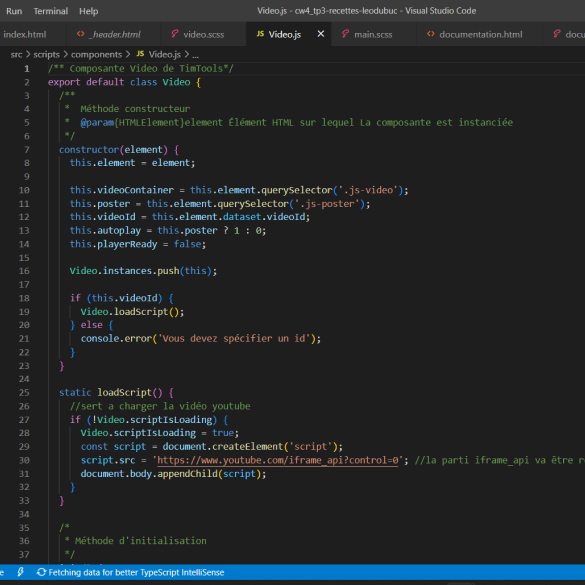

Logiciels

VS Code
- Intégration du texte dans le site
- Intégration du style
- Intégration de l’intéraction dans le site
Figma
- Création du wireframe
- Intégration des couleurs et des images
- Finalisation du design
Le but de ce projet était de refaire le design du site web de Recette en pot. J’avais seulement accès aux images et a quelques symbole, par exemple des flèches. Pour ce qui est du design, tout est sorti de mon imagination.
Création de cube pour déterminer où vont être placer les images, textes et bouton.
01
Dans cette parti du travaille, j’intégre les styles que j’ai donneré, ce qui veux dire, les couleurs, la typographie et les images a mon site.
02
Rendu à cette étape, je commence l’intégration de mon site en codant avec VS code.
03
Mon premier défi a été de trouver les bonnes couleurs pour bien représenter l’ambiance du site toute en y incorporant mon style. J’ai réussi à mettre des couleurs assez sobre, mais qui attire tout de mêmes l’attention.
Un autre problème a été lors du développement du site, nous avions comme défi d’inclure des composantes que nous avions jamais fait. Ce qui a causée beaucoup de problèmes dans le Java scripts.
Lors de la mise en ligne de mon site, de nombreuses images et titre n’apparaîsait pas. En plus, quelques marges n’était plus placer comme avant. J’ai donc dû régler tout ces problèmes.